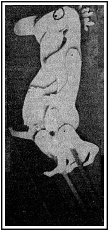

|
By ROBIN HOWELLS CARTOONIST Michael Leunig, Raymond Cloonan and Stefan Szonyi, all of Daylesford Victoria, were charged in the Daylesford court late last week with exhibiting obscene figures and offensive behavior. Magistrate A. G. McCallum was told by the police prosecutor and informant sergeant D. Hume that around 9.45pm on december 31 1975 he was in attendance at the Daylesford new year gala procession which took place in Daylesford's (main) Vincent street, and observed a four ton truck with brush or leaves to four feet high around the tray and two cutout human forms depicting a naked male and female. The float was called "Fun in the Forest". Questioned by defence barrister Tim Morris, Hume said: "I can't recall anyone reacting to this float with laughter." After further evidence from prosecution and defence witnesses including Leunig, magistrate McCallum suggested that the police withdraw the charge of exhibiting an obscene figure. |
He then placed Leunig, Cloonan and Szonyi on good behavior bonds for one year on the offensive behavior charges. They were also ordered to pay $50 each into the court poor box. For more on Leunig and the law, see Outsight with John Hepworth, p. 744.
 |